Rocket Launch Archive
scroll up & down / use arrow keys
scroll-driven 3D circular gallery
Saturn V
NASA · 1967–1973
Apollo 11 liftoff ·
NASA
Space Shuttle
NASA · 1981–2011
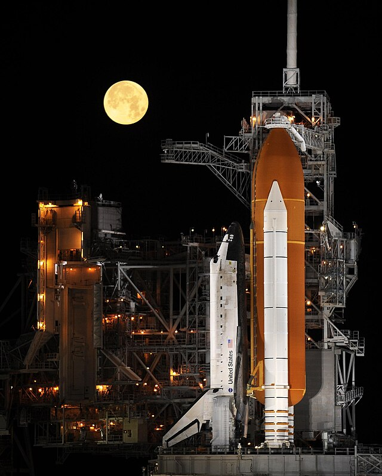
Discovery on pad ·
NASA
Falcon 9
SpaceX · 2010–Present
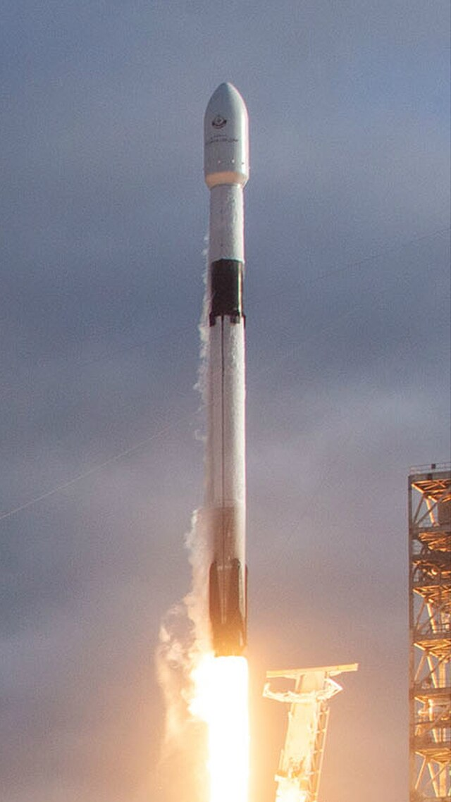
Es'hail-2 mission ·
SpaceX
Starship
SpaceX · 2019–Present
Starship & moonset ·
SpaceX
Artemis SLS
NASA · 2022–Present
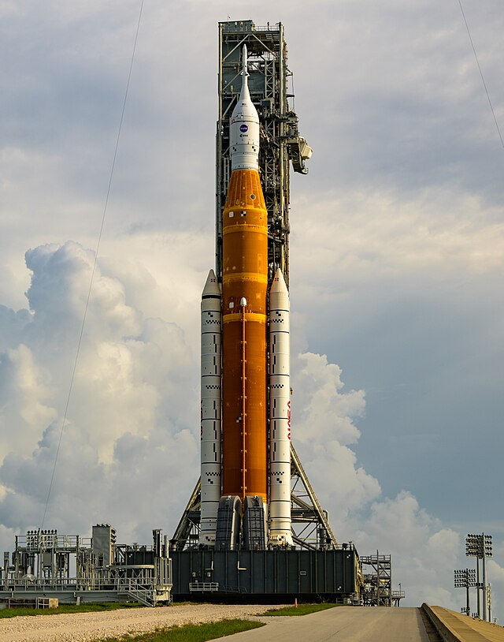
Artemis I pre-launch ·
NASA
Proton-M
Roscosmos · 2001–2022
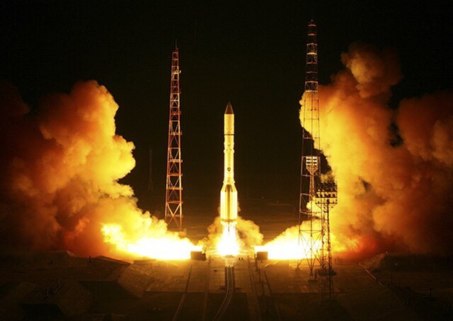
Blagovest launch ·
Roscosmos
Falcon Heavy
SpaceX · 2018–Present
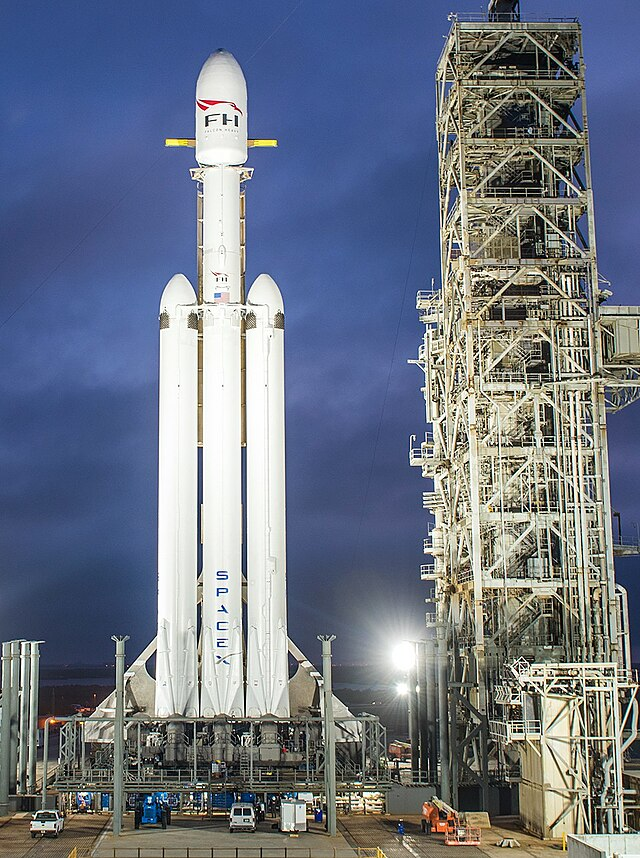
Falcon Heavy launch ·
SpaceX
View from Orbit
ISS · 1998–Present
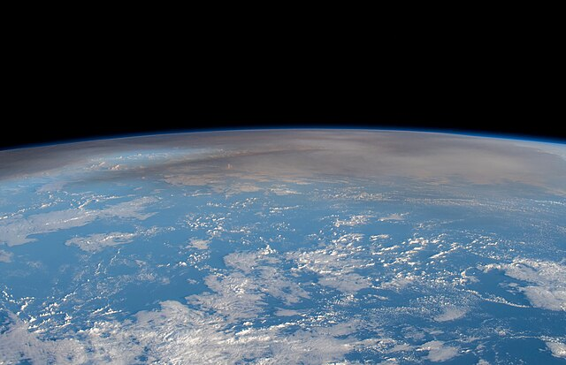
Hunga Tonga from ISS ·
NASA
Delta II
ULA · 1989–2018
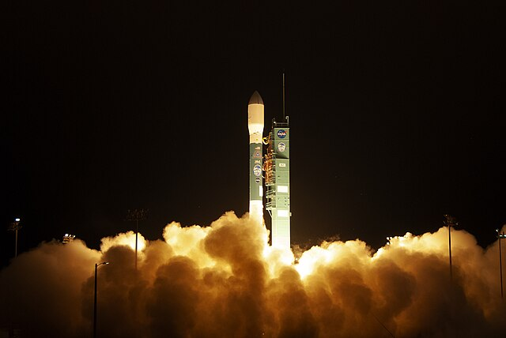
ICESat-2 ·
NASA
The Night Sky
Milky Way · Perseids
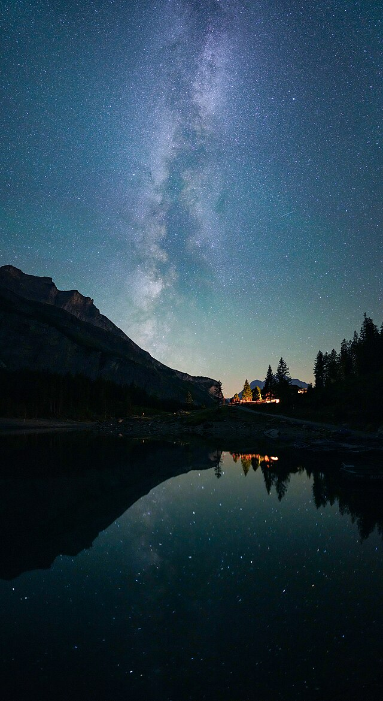
Perseids over Oeschinensee ·
Giles Laurent
Deep Space
Cat's Eye Nebula · NGC 6543
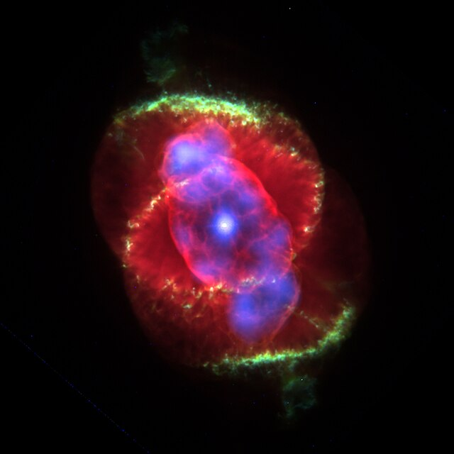
NGC 6543 ·
NASA / ESA / Hubble
RS-25 Engine
NASA · SSME Test Fire
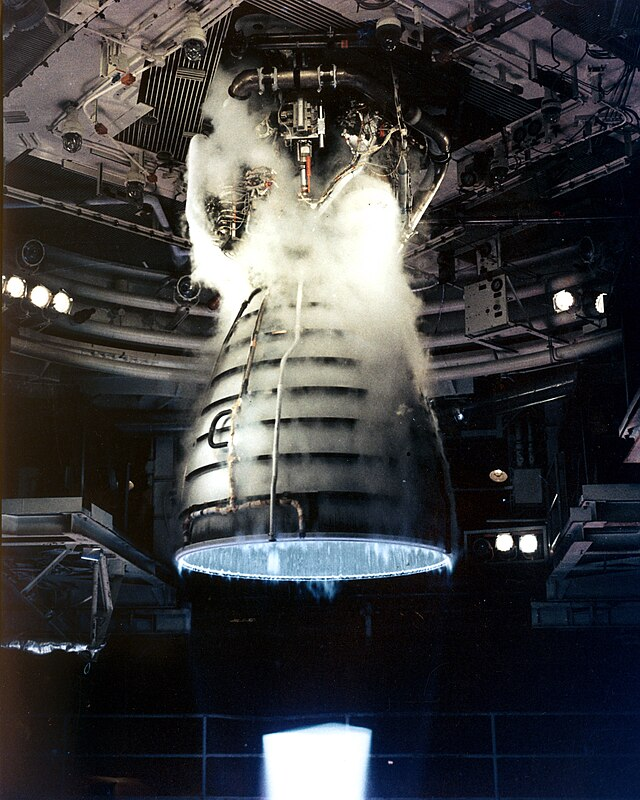
RS-25 test fire ·
NASA / Stennis
Long March 2D
CNSA · 1992–Present
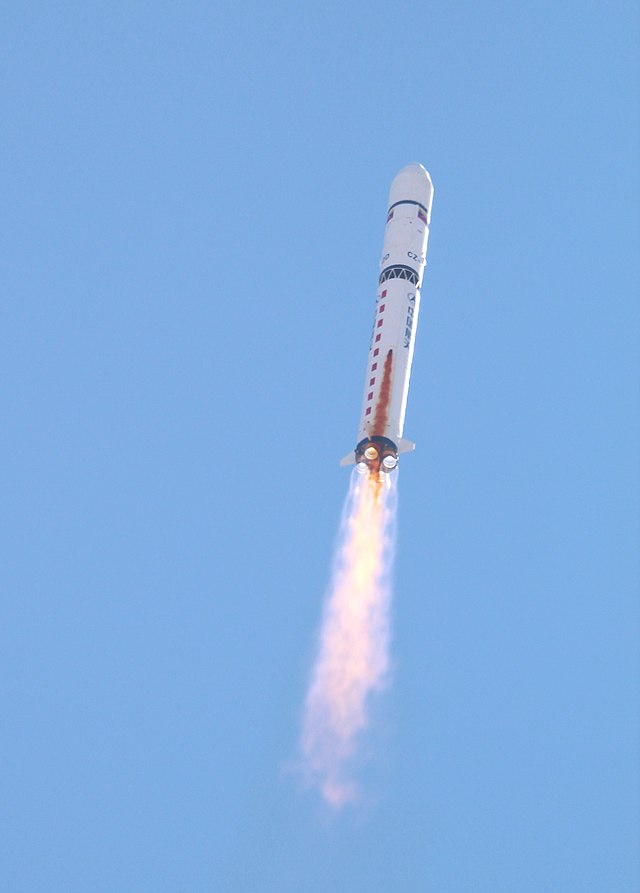
VRSS-1 mission ·
CNSA
Delta IV Heavy
ULA · 2004–2024
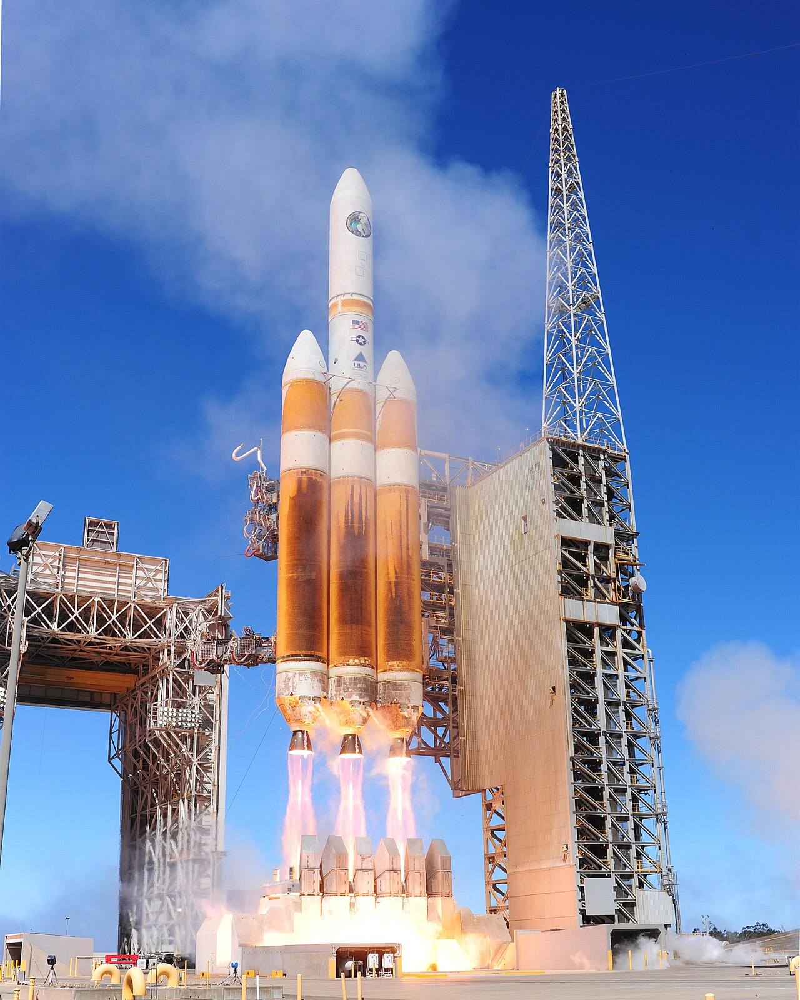
NROL-65 launch ·
USAF / ULA
Soyuz
Roscosmos · 1967–Present
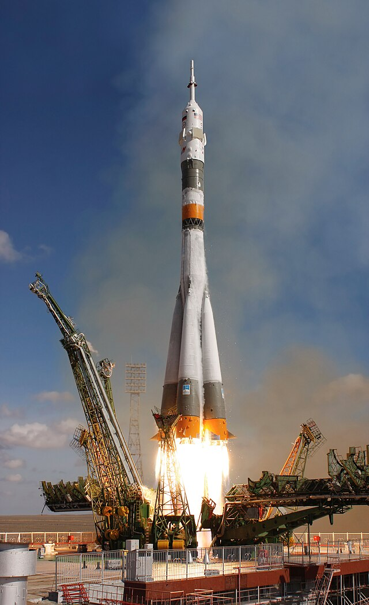
Soyuz TMA-13 on pad ·
NASA
Ariane 5
ESA · JWST Launch · 2021
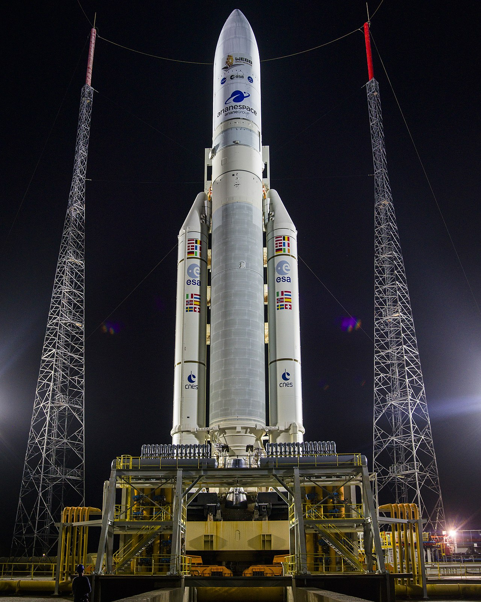
JWST liftoff ·
ESA / NASA / CSA
New Shepard
Blue Origin · 2015–Present
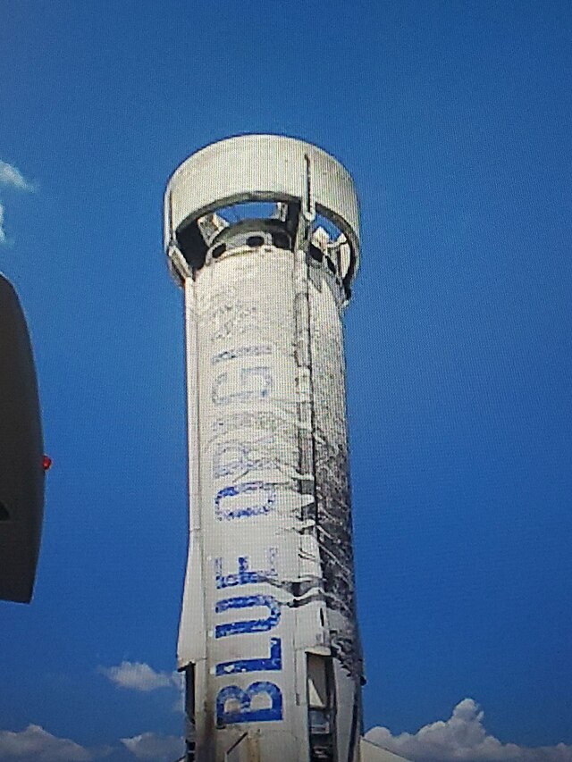
New Shepard on pad ·
Blue Origin
H-IIA
JAXA · GPM Mission · 2014
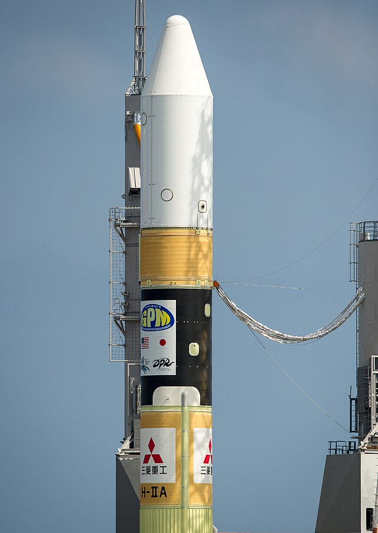
GPM mission fairing ·
JAXA / NASA
✕ CLOSE
About
Fun Facts